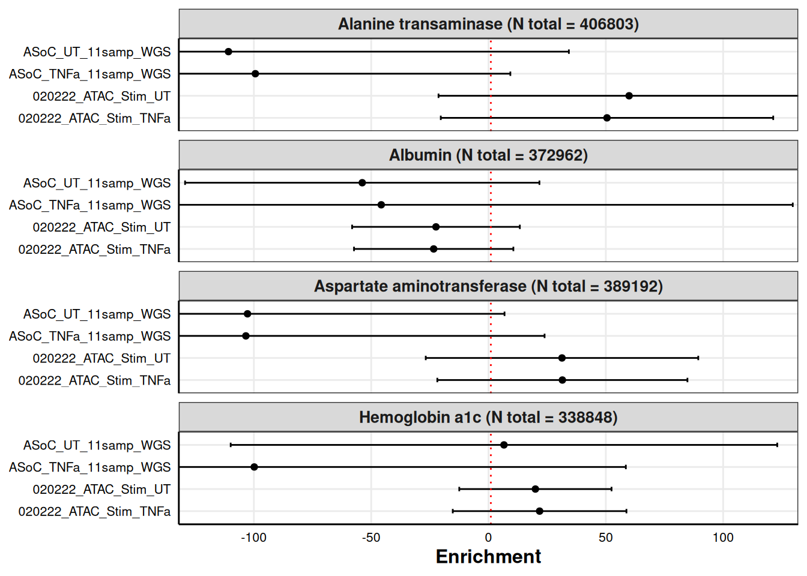
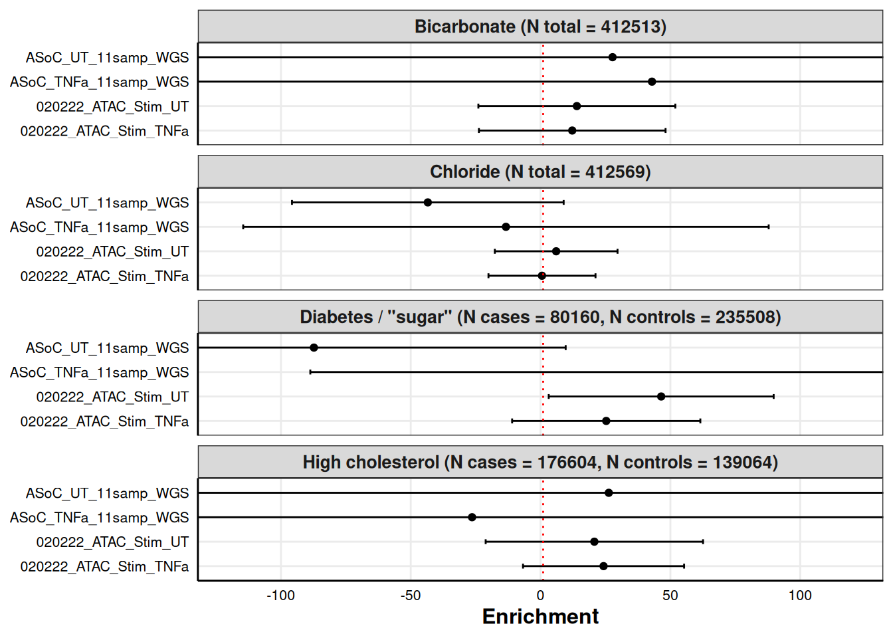
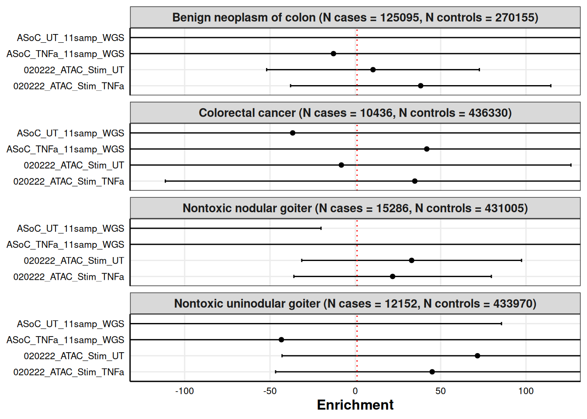
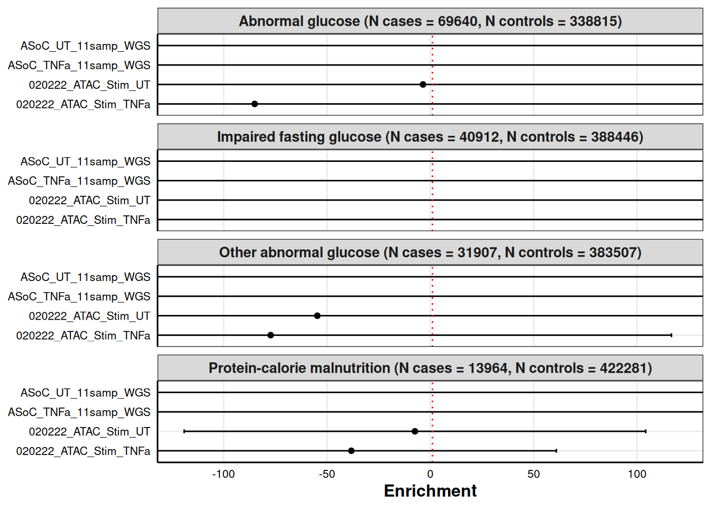
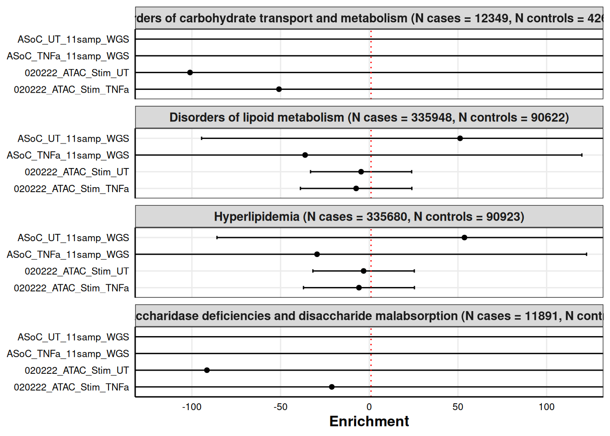
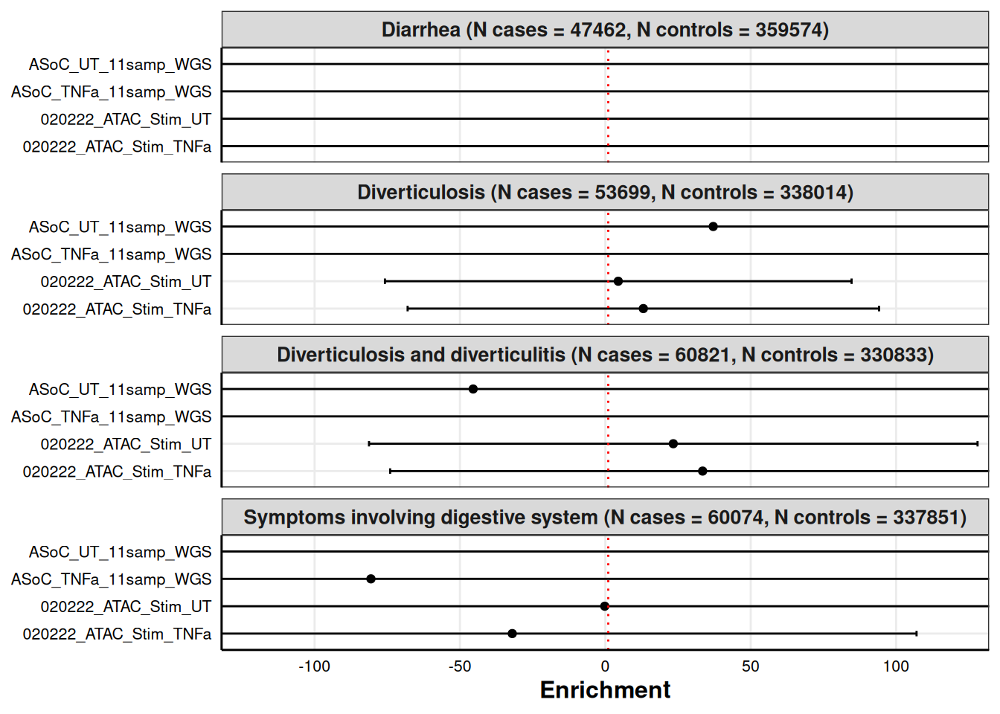
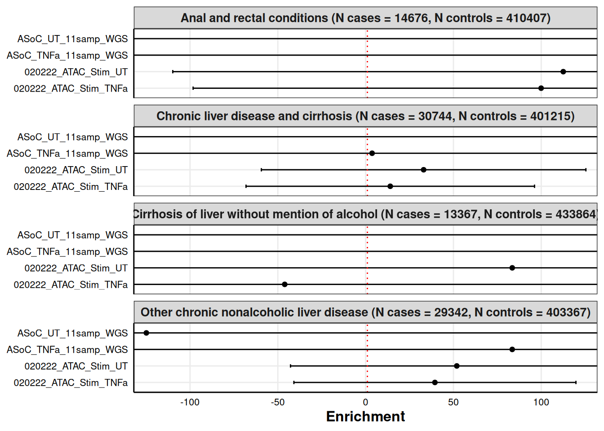
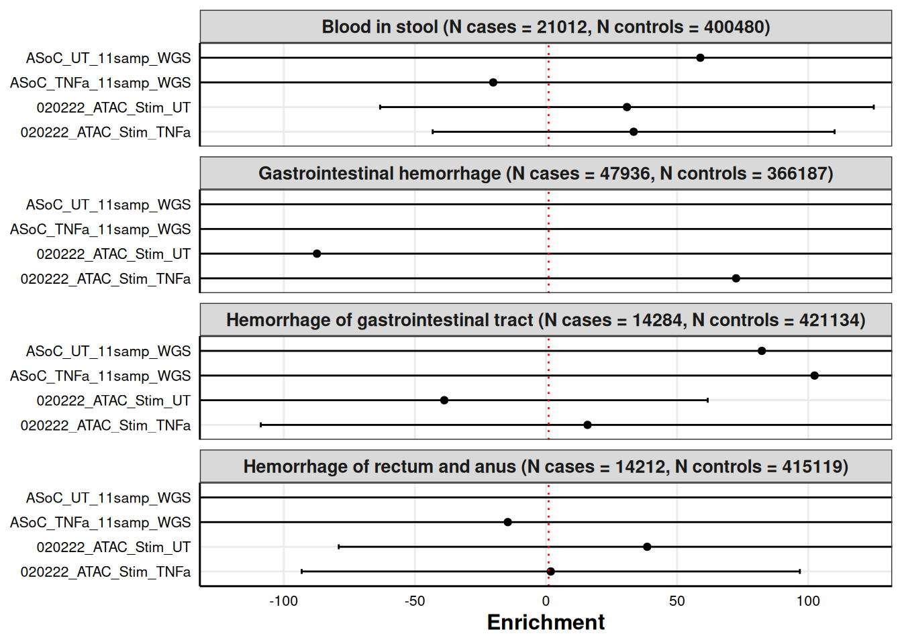
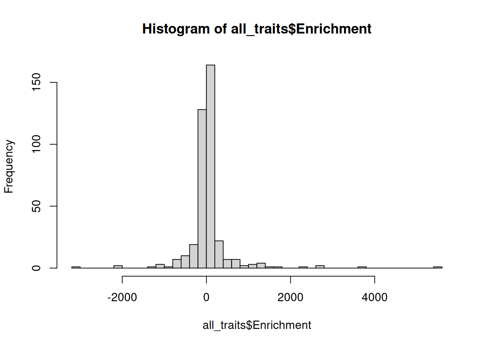
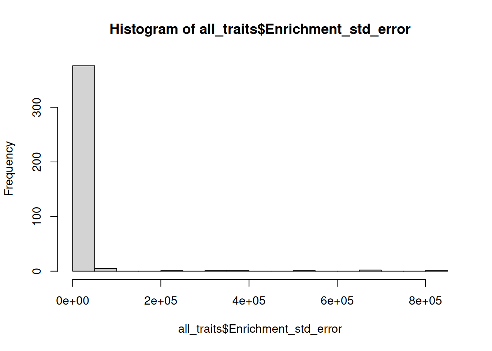

Functional Enrichment Analysis Plots
Katie Hooker
2025-01-15
Last updated: 2025-02-21
Checks: 6 1
Knit directory: organoid-rotation/
This reproducible R Markdown analysis was created with workflowr (version 1.7.1). The Checks tab describes the reproducibility checks that were applied when the results were created. The Past versions tab lists the development history.
Great! Since the R Markdown file has been committed to the Git repository, you know the exact version of the code that produced these results.
Great job! The global environment was empty. Objects defined in the global environment can affect the analysis in your R Markdown file in unknown ways. For reproduciblity it’s best to always run the code in an empty environment.
The command set.seed(20250108) was run prior to running
the code in the R Markdown file. Setting a seed ensures that any results
that rely on randomness, e.g. subsampling or permutations, are
reproducible.
Great job! Recording the operating system, R version, and package versions is critical for reproducibility.
Nice! There were no cached chunks for this analysis, so you can be confident that you successfully produced the results during this run.
Using absolute paths to the files within your workflowr project makes it difficult for you and others to run your code on a different machine. Change the absolute path(s) below to the suggested relative path(s) to make your code more reproducible.
| absolute | relative |
|---|---|
| /dartfs/rc/lab/S/Szhao/katieh/organoid-rotation/outputs/ | outputs |
| /dartfs/rc/lab/S/Szhao/katieh/organoid-rotation/data/MVP_pheno_list.csv | data/MVP_pheno_list.csv |
Great! You are using Git for version control. Tracking code development and connecting the code version to the results is critical for reproducibility.
The results in this page were generated with repository version 95e31a3. See the Past versions tab to see a history of the changes made to the R Markdown and HTML files.
Note that you need to be careful to ensure that all relevant files for
the analysis have been committed to Git prior to generating the results
(you can use wflow_publish or
wflow_git_commit). workflowr only checks the R Markdown
file, but you know if there are other scripts or data files that it
depends on. Below is the status of the Git repository when the results
were generated:
Ignored files:
Ignored: .snakemake/auxiliary/
Ignored: .snakemake/conda-archive/
Ignored: .snakemake/conda/
Ignored: .snakemake/incomplete/
Ignored: .snakemake/locks/
Ignored: .snakemake/shadow/
Ignored: .snakemake/singularity/
Ignored: code/MVP-data-pull/job_error_3623155.err
Ignored: code/MVP-data-pull/job_output_3623155.out
Ignored: code/pipeline/.snakemake/auxiliary/
Ignored: code/pipeline/.snakemake/conda-archive/
Ignored: code/pipeline/.snakemake/conda/
Ignored: code/pipeline/.snakemake/incomplete/
Ignored: code/pipeline/.snakemake/locks/
Ignored: code/pipeline/.snakemake/shadow/
Ignored: code/pipeline/.snakemake/singularity/
Ignored: data/extracted/
Ignored: outputs/annotations/
Ignored: outputs/munged_sumstats/
Ignored: outputs/plots/
Ignored: raw-sumstats/
Note that any generated files, e.g. HTML, png, CSS, etc., are not included in this status report because it is ok for generated content to have uncommitted changes.
These are the previous versions of the repository in which changes were
made to the R Markdown (analysis/enrichment-plots.Rmd) and
HTML (docs/enrichment-plots.html) files. If you’ve
configured a remote Git repository (see ?wflow_git_remote),
click on the hyperlinks in the table below to view the files as they
were in that past version.
| File | Version | Author | Date | Message |
|---|---|---|---|---|
| Rmd | 95e31a3 | akhooker | 2025-02-21 | Update enrichment plots |
| html | 931961b | akhooker | 2025-02-21 | Build site. |
| Rmd | e26f15e | akhooker | 2025-02-21 | Visualize enrichment results |
This script is for plotting the outputs of the functional enrichment analysis run on the 97 selected MVP phenotypes.
Plotting function
enrichment_plot <- function(data, group, xlim=NULL){
group = sym(group)
p <- ggplot(data, aes(x = Enrichment, y = !!group))+
geom_point() +
xlab("Enrichment") +
geom_errorbarh(aes(xmin=Enrichment-ci, xmax=Enrichment+ci), height=.2) +
facet_wrap(Trait_label~.,ncol = 1) +
theme_bw() +
geom_vline(xintercept = 1,linetype="dotted", colour = "red") +
theme(axis.ticks = element_blank(),
panel.grid.minor = element_blank(),
axis.line = element_line(colour = "black"),
axis.text = element_text(size = 8, colour = "black"),
axis.title = element_text(face="bold",size = 12),
strip.text = element_text(face="bold",size = 12),
panel.spacing.x = unit(0.6,units = "cm"),
axis.title.y = element_blank(),
legend.position = "none",
plot.title = element_text(hjust = 0.5))
if(!is.null(xlim)){
p <- p + coord_cartesian(xlim = xlim)
}
print(p)
}Compiling all trait results
output_path <- "/dartfs/rc/lab/S/Szhao/katieh/organoid-rotation/outputs/"
# Reading in trait abbreviations and their corresponding trait names
pheno_list <- read.csv("/dartfs/rc/lab/S/Szhao/katieh/organoid-rotation/data/MVP_pheno_list.csv")
# Fixing traits that are not unique after shortening
pheno_list[pheno_list$Description == "Irritable Bowel Syndrome (IBS)",]$Description <- "Irritable Bowel Syndrome survey result"
pheno_list[pheno_list$Description == "glucose (finger stick, mean, inv-norm transformed)",]$Description <- "Glucose finger stick result"
pheno_list <- pheno_list %>%
mutate(Short_desc = str_trim(gsub("\\(.*?\\)", "", Description))) %>%
mutate(Short_desc = str_to_sentence(Short_desc)) %>%
mutate(Short_desc = gsub("(?i)Gerd", "GERD", Short_desc)) %>%
mutate(Short_desc = gsub("(?i)nos", "NOS", Short_desc))
traits <- unique(pheno_list$Trait)
traitslab <- unique(pheno_list$Short_desc)
all_traits <- NULL
for (i in 1:length(traits)){
efile1 <- read.table(paste0(output_path, sprintf("results/%s_enrichment.results", traits[i])),
header=T)
enrich <- efile1[1:4,c(1,5,6,7)]
enrich$ci <- 1.96*enrich$Enrichment_std_error
enrich$Trait <- traits[i]
enrich$Trait_label <- traitslab[i]
if(is.null(all_traits)){
all_traits <- enrich
} else{
all_traits <- rbind(all_traits, enrich)
}
}Plot all traits, four at a time
for (i in seq(1, nrow(all_traits)-4, 16)){
enrichment_plot(all_traits[i:(i+15),], group="Category", xlim=c(-120,120))
}
| Version | Author | Date |
|---|---|---|
| 931961b | akhooker | 2025-02-21 |

| Version | Author | Date |
|---|---|---|
| 931961b | akhooker | 2025-02-21 |

| Version | Author | Date |
|---|---|---|
| 931961b | akhooker | 2025-02-21 |

| Version | Author | Date |
|---|---|---|
| 931961b | akhooker | 2025-02-21 |

| Version | Author | Date |
|---|---|---|
| 931961b | akhooker | 2025-02-21 |

| Version | Author | Date |
|---|---|---|
| 931961b | akhooker | 2025-02-21 |

| Version | Author | Date |
|---|---|---|
| 931961b | akhooker | 2025-02-21 |

| Version | Author | Date |
|---|---|---|
| 931961b | akhooker | 2025-02-21 |

| Version | Author | Date |
|---|---|---|
| 931961b | akhooker | 2025-02-21 |

| Version | Author | Date |
|---|---|---|
| 931961b | akhooker | 2025-02-21 |

| Version | Author | Date |
|---|---|---|
| 931961b | akhooker | 2025-02-21 |

| Version | Author | Date |
|---|---|---|
| 931961b | akhooker | 2025-02-21 |

| Version | Author | Date |
|---|---|---|
| 931961b | akhooker | 2025-02-21 |

| Version | Author | Date |
|---|---|---|
| 931961b | akhooker | 2025-02-21 |

| Version | Author | Date |
|---|---|---|
| 931961b | akhooker | 2025-02-21 |

| Version | Author | Date |
|---|---|---|
| 931961b | akhooker | 2025-02-21 |

| Version | Author | Date |
|---|---|---|
| 931961b | akhooker | 2025-02-21 |

| Version | Author | Date |
|---|---|---|
| 931961b | akhooker | 2025-02-21 |

| Version | Author | Date |
|---|---|---|
| 931961b | akhooker | 2025-02-21 |

| Version | Author | Date |
|---|---|---|
| 931961b | akhooker | 2025-02-21 |

| Version | Author | Date |
|---|---|---|
| 931961b | akhooker | 2025-02-21 |
| Version | Author | Date |
|---|---|---|
| 931961b | akhooker | 2025-02-21 |

| Version | Author | Date |
|---|---|---|
| 931961b | akhooker | 2025-02-21 |
| Version | Author | Date |
|---|---|---|
| 931961b | akhooker | 2025-02-21 |
# Last trait
enrichment_plot(all_traits[385:388,], group="Category", xlim=c(-120,120))
| Version | Author | Date |
|---|---|---|
| 931961b | akhooker | 2025-02-21 |
Looking at which traits have abnormally large enrichment or large standard error
hist(all_traits$Enrichment, breaks = 50)
hist(all_traits$Enrichment_std_error, breaks = 20)
subset(all_traits, Enrichment < -200) Category Enrichment Enrichment_std_error Enrichment_p
43 ASoC_TNFa_11samp_WGS -341.29 840.80 0.5419300
45 020222_ATAC_Stim_TNFa -276.09 585.13 0.1181800
46 020222_ATAC_Stim_UT -415.18 878.58 0.0311030
48 ASoC_UT_11samp_WGS -603.78 1528.70 0.5076800
59 ASoC_TNFa_11samp_WGS -961.23 141830.00 0.4609900
60 ASoC_UT_11samp_WGS -651.45 94330.00 0.5787700
64 ASoC_UT_11samp_WGS -234.50 321.65 0.2071700
79 ASoC_TNFa_11samp_WGS -280.39 261.10 0.1093200
92 ASoC_UT_11samp_WGS -301.03 142.71 0.0110920
96 ASoC_UT_11samp_WGS -447.55 274.36 0.0155220
112 ASoC_UT_11samp_WGS -289.61 403.80 0.3863700
131 ASoC_TNFa_11samp_WGS -205.63 921.12 0.7267900
133 020222_ATAC_Stim_TNFa -461.65 5197.70 0.2292300
134 020222_ATAC_Stim_UT -412.45 4560.60 0.1487300
139 ASoC_TNFa_11samp_WGS -493.95 1151.60 0.0353950
148 ASoC_UT_11samp_WGS -293.47 267.16 0.1156900
151 ASoC_TNFa_11samp_WGS -623310.00 692640.00 0.6606400
152 ASoC_UT_11samp_WGS -322100.00 363190.00 0.8188400
164 ASoC_UT_11samp_WGS -802.26 24679.00 0.1260000
168 ASoC_UT_11samp_WGS -710.07 1601.10 0.0710930
181 020222_ATAC_Stim_TNFa -355.99 794.37 0.0143590
182 020222_ATAC_Stim_UT -362.38 826.03 0.0242910
189 020222_ATAC_Stim_TNFa -217.65 1558.10 0.3028800
190 020222_ATAC_Stim_UT -403.88 3021.40 0.1043700
191 ASoC_TNFa_11samp_WGS -1446.50 10475.00 0.2988400
192 ASoC_UT_11samp_WGS -552.88 3791.90 0.6417700
229 020222_ATAC_Stim_TNFa -244.67 3321.90 0.5788700
232 ASoC_UT_11samp_WGS -1352.80 18373.00 0.4333400
244 ASoC_UT_11samp_WGS -203.55 133.36 0.0402720
259 ASoC_TNFa_11samp_WGS -257.30 469.30 0.5078100
261 020222_ATAC_Stim_TNFa -732.72 41364.00 0.3420000
262 020222_ATAC_Stim_UT -289.74 15426.00 0.7058700
283 ASoC_TNFa_11samp_WGS -332.97 474.91 0.1738700
293 020222_ATAC_Stim_TNFa -4129.40 76739.00 0.6832700
294 020222_ATAC_Stim_UT -9206.60 167720.00 0.4046200
296 ASoC_UT_11samp_WGS -40576.00 732880.00 0.6129400
307 ASoC_TNFa_11samp_WGS -501.08 608.36 0.1123000
308 ASoC_UT_11samp_WGS -663.10 649.95 0.0030039
312 ASoC_UT_11samp_WGS -869.40 1776.70 0.0353800
328 ASoC_UT_11samp_WGS -237.45 238.30 0.2662200
335 ASoC_TNFa_11samp_WGS -263.72 984.79 0.7113100
336 ASoC_UT_11samp_WGS -758.69 3111.10 0.1451300
344 ASoC_UT_11samp_WGS -783.12 1381.40 0.0099177
347 ASoC_TNFa_11samp_WGS -506.86 2537.60 0.3906700
348 ASoC_UT_11samp_WGS -1252.90 5821.30 0.0185150
356 ASoC_UT_11samp_WGS -563.30 76204.00 0.8357900
376 ASoC_UT_11samp_WGS -320.17 1003.20 0.7419400
ci Trait
43 1647.9680 GIIBS
45 1146.8548 GIOth
46 1722.0168 GIOth
48 2996.2520 GIOth
59 277986.8000 GIUlcer
60 184886.8000 GIUlcer
64 630.4340 Glucose_FS_Mean_INT
79 511.7560 Mg_BSP_Mean_INT
92 279.7116 Phe_241
96 537.7456 Phe_241_1
112 791.4480 Phe_250_1
131 1805.3952 Phe_250_4
133 10187.4920 Phe_250_41
134 8938.7760 Phe_250_41
139 2257.1360 Phe_250_42
148 523.6336 Phe_261
151 1357574.4000 Phe_261_2
152 711852.4000 Phe_261_2
164 48370.8400 Phe_271
168 3138.1560 Phe_271_3
181 1556.9652 Phe_272_12
182 1619.0188 Phe_272_12
189 3053.8760 Phe_275
190 5921.9440 Phe_275
191 20531.0000 Phe_275
192 7432.1240 Phe_275
229 6510.9240 Phe_278_11
232 36011.0800 Phe_278_11
244 261.3856 Phe_530_11
259 919.8280 Phe_535
261 81073.4400 Phe_536
262 30234.9600 Phe_536
283 930.8236 Phe_558
293 150408.4400 Phe_561_1
294 328731.2000 Phe_561_1
296 1436444.8000 Phe_561_1
307 1192.3856 Phe_562_2
308 1273.9020 Phe_562_2
312 3482.3320 Phe_563
328 467.0680 Phe_571
335 1930.1884 Phe_571_51
336 6097.7560 Phe_571_51
344 2707.5440 Phe_574
347 4973.6960 Phe_574_1
348 11409.7480 Phe_574_1
356 149359.8400 Phe_578
376 1966.2720 Phe_789
Trait_label
43 Irritable bowel syndrome survey result
45 Other digestive system problems
46 Other digestive system problems
48 Other digestive system problems
59 Peptic ulcers
60 Peptic ulcers
64 Glucose finger stick result
79 Magnesium
92 Nontoxic nodular goiter
96 Nontoxic uninodular goiter
112 Type 1 diabetes
131 Abnormal glucose
133 Impaired fasting glucose
134 Impaired fasting glucose
139 Other abnormal glucose
148 Vitamin deficiency
151 Vitamin b-complex deficiencies
152 Vitamin b-complex deficiencies
164 Disorders of carbohydrate transport and metabolism
168 Intestinal disaccharidase deficiencies and disaccharide malabsorption
181 Hyperglyceridemia
182 Hyperglyceridemia
189 Disorders of mineral metabolism
190 Disorders of mineral metabolism
191 Disorders of mineral metabolism
192 Disorders of mineral metabolism
229 Morbid obesity
232 Morbid obesity
244 GERD
259 Gastritis and duodenitis
261 Disorders of function of stomach
262 Disorders of function of stomach
283 Noninfectious gastroenteritis
293 Diarrhea
294 Diarrhea
296 Diarrhea
307 Diverticulitis
308 Diverticulitis
312 Constipation
328 Chronic liver disease and cirrhosis
335 Cirrhosis of liver without mention of alcohol
336 Cirrhosis of liver without mention of alcohol
344 Cholelithiasis and cholecystitis
347 Cholelithiasis
348 Cholelithiasis
356 Gastrointestinal hemorrhage
376 Nausea and vomitingsubset(all_traits, Enrichment > 200) Category Enrichment Enrichment_std_error Enrichment_p
49 020222_ATAC_Stim_TNFa 201.93 193.38 0.014474
51 ASoC_TNFa_11samp_WGS 1023.30 1085.00 0.122710
58 020222_ATAC_Stim_UT 652.84 91932.00 0.100590
63 ASoC_TNFa_11samp_WGS 303.27 449.04 0.198240
88 ASoC_UT_11samp_WGS 234.06 329.75 0.421450
111 ASoC_TNFa_11samp_WGS 848.18 940.92 0.069108
123 ASoC_TNFa_11samp_WGS 345.74 226.37 0.115750
127 ASoC_TNFa_11samp_WGS 213.12 123.00 0.064318
132 ASoC_UT_11samp_WGS 478.08 1622.80 0.352740
135 ASoC_TNFa_11samp_WGS 223.47 5169.70 0.925780
136 ASoC_UT_11samp_WGS 3132.20 40379.00 0.225600
140 ASoC_UT_11samp_WGS 240.47 682.21 0.419980
143 ASoC_TNFa_11samp_WGS 693.76 632.21 0.039157
144 ASoC_UT_11samp_WGS 1118.10 1167.30 0.099882
149 020222_ATAC_Stim_TNFa 554220.00 645170.00 0.142000
150 020222_ATAC_Stim_UT 582820.00 681780.00 0.137640
158 020222_ATAC_Stim_UT 222.41 2754.90 0.318210
159 ASoC_TNFa_11samp_WGS 2354.60 34228.00 0.010368
163 ASoC_TNFa_11samp_WGS 365.25 10446.00 0.643390
167 ASoC_TNFa_11samp_WGS 378.67 878.75 0.515170
183 ASoC_TNFa_11samp_WGS 619.23 1409.90 0.167370
184 ASoC_UT_11samp_WGS 624.92 1353.70 0.051985
196 ASoC_UT_11samp_WGS 951.19 1110.50 0.345780
200 ASoC_UT_11samp_WGS 1556.70 2060.70 0.369410
204 ASoC_UT_11samp_WGS 787.10 1383.90 0.482430
208 ASoC_UT_11samp_WGS 467.15 661.69 0.432500
219 ASoC_TNFa_11samp_WGS 403.45 440.25 0.180960
220 ASoC_UT_11samp_WGS 270.64 337.28 0.302830
223 ASoC_TNFa_11samp_WGS 214.07 165.46 0.131940
231 ASoC_TNFa_11samp_WGS 3354.30 46525.00 0.215900
251 ASoC_TNFa_11samp_WGS 386.40 471.00 0.144700
252 ASoC_UT_11samp_WGS 294.73 355.87 0.126140
255 ASoC_TNFa_11samp_WGS 200.10 313.57 0.489990
263 ASoC_TNFa_11samp_WGS 1614.50 98760.00 0.428550
264 ASoC_UT_11samp_WGS 1885.40 115320.00 0.282820
267 ASoC_TNFa_11samp_WGS 200.33 281.84 0.329970
276 ASoC_UT_11samp_WGS 1393.40 4833.50 0.138160
279 ASoC_TNFa_11samp_WGS 453.29 595.91 0.197060
280 ASoC_UT_11samp_WGS 275.47 456.01 0.416790
292 ASoC_UT_11samp_WGS 294.88 519.02 0.311640
295 ASoC_TNFa_11samp_WGS 22138.00 381390.00 0.663030
299 ASoC_TNFa_11samp_WGS 301.33 241.84 0.084690
303 ASoC_TNFa_11samp_WGS 319.55 237.39 0.065490
310 020222_ATAC_Stim_UT 200.12 481.46 0.172840
311 ASoC_TNFa_11samp_WGS 717.32 1824.50 0.289220
315 ASoC_TNFa_11samp_WGS 813.21 1242.50 0.122860
316 ASoC_UT_11samp_WGS 378.80 935.11 0.647670
320 ASoC_UT_11samp_WGS 281.13 321.40 0.345180
323 ASoC_TNFa_11samp_WGS 206.78 495.25 0.682780
324 ASoC_UT_11samp_WGS 240.12 519.52 0.634390
351 ASoC_TNFa_11samp_WGS 839.02 1125.60 0.036000
352 ASoC_UT_11samp_WGS 704.42 1132.00 0.022245
364 ASoC_UT_11samp_WGS 277.93 263.37 0.107090
ci Trait
49 379.0248 GIPolyp
51 2126.6000 GIPolyp
58 180186.7200 GIUlcer
63 880.1184 Glucose_FS_Mean_INT
88 646.3100 Phe_208
111 1844.2032 Phe_250_1
123 443.6852 Phe_250_23
127 241.0800 Phe_250_24
132 3180.6880 Phe_250_4
135 10132.6120 Phe_250_41
136 79142.8400 Phe_250_41
140 1337.1316 Phe_250_42
143 1239.1316 Phe_260
144 2287.9080 Phe_260
149 1264533.2000 Phe_261_2
150 1336288.8000 Phe_261_2
158 5399.6040 Phe_269
159 67086.8800 Phe_269
163 20474.1600 Phe_271
167 1722.3500 Phe_271_3
183 2763.4040 Phe_272_12
184 2653.2520 Phe_272_12
196 2176.5800 Phe_276
200 4038.9720 Phe_276_1
204 2712.4440 Phe_276_12
208 1296.9124 Phe_276_13
219 862.8900 Phe_276_5
220 661.0688 Phe_276_5
223 324.3016 Phe_278
231 91189.0000 Phe_278_11
251 923.1600 Phe_530_14
252 697.5052 Phe_530_14
255 614.5972 Phe_531
263 193569.6000 Phe_536
264 226027.2000 Phe_536
267 552.4064 Phe_550
276 9473.6600 Phe_550_2
279 1167.9836 Phe_550_4
280 893.7796 Phe_550_4
292 1017.2792 Phe_561
295 747524.4000 Phe_561_1
299 474.0064 Phe_562
303 465.2844 Phe_562_1
310 943.6616 Phe_563
311 3576.0200 Phe_563
315 2435.3000 Phe_564
316 1832.8156 Phe_564
320 629.9440 Phe_564_1
323 970.6900 Phe_565
324 1018.2592 Phe_565
351 2206.1760 Phe_577
352 2218.7200 Phe_577
364 516.2052 Phe_578_8
Trait_label
49 Colon polyps
51 Colon polyps
58 Peptic ulcers
63 Glucose finger stick result
88 Benign neoplasm of colon
111 Type 1 diabetes
123 Type 2 diabetes with ophthalmic manifestations
127 Type 2 diabetes with neurological manifestations
132 Abnormal glucose
135 Impaired fasting glucose
136 Impaired fasting glucose
140 Other abnormal glucose
143 Protein-calorie malnutrition
144 Protein-calorie malnutrition
149 Vitamin b-complex deficiencies
150 Vitamin b-complex deficiencies
158 Proteinuria
159 Proteinuria
163 Disorders of carbohydrate transport and metabolism
167 Intestinal disaccharidase deficiencies and disaccharide malabsorption
183 Hyperglyceridemia
184 Hyperglyceridemia
196 Disorders of fluid, electrolyte, and acid-based balance
200 Electrolyte imbalance
204 Hyposmolality and/or hyponatremia
208 Hyperpotassemia
219 Hypovolemia
220 Hypovolemia
223 Overweight, obesity and other hyperalimentation
231 Morbid obesity
251 Reflux esophagitis
252 Reflux esophagitis
255 Peptic ulcer
263 Disorders of function of stomach
264 Disorders of function of stomach
267 Abdominal hernia
276 Diaphragmatic hernia
279 Umbilical hernia
280 Umbilical hernia
292 Symptoms involving digestive system
295 Diarrhea
299 Diverticulosis and diverticulitis
303 Diverticulosis
310 Constipation
311 Constipation
315 Functional digestive disorders
316 Functional digestive disorders
320 Irritable bowel syndrome
323 Anal and rectal conditions
324 Anal and rectal conditions
351 Diseases of pancreas
352 Diseases of pancreas
364 Hemorrhage of rectum and anussubset(all_traits, Enrichment_std_error < -200)[1] Category Enrichment Enrichment_std_error
[4] Enrichment_p ci Trait
[7] Trait_label
<0 rows> (or 0-length row.names)subset(all_traits, Enrichment_std_error > 200) Category Enrichment Enrichment_std_error Enrichment_p
42 020222_ATAC_Stim_UT -1.1300e+02 219.07 0.1648500
43 ASoC_TNFa_11samp_WGS -3.4129e+02 840.80 0.5419300
44 ASoC_UT_11samp_WGS 1.3187e+02 341.83 0.6387500
45 020222_ATAC_Stim_TNFa -2.7609e+02 585.13 0.1181800
46 020222_ATAC_Stim_UT -4.1518e+02 878.58 0.0311030
47 ASoC_TNFa_11samp_WGS 1.6217e+02 1348.40 0.8786800
48 ASoC_UT_11samp_WGS -6.0378e+02 1528.70 0.5076800
51 ASoC_TNFa_11samp_WGS 1.0233e+03 1085.00 0.1227100
52 ASoC_UT_11samp_WGS -4.2517e+01 465.32 0.9149600
55 ASoC_TNFa_11samp_WGS -3.5592e+01 245.15 0.8746600
56 ASoC_UT_11samp_WGS -1.9155e+02 293.46 0.3978900
57 020222_ATAC_Stim_TNFa 4.3738e+01 4707.00 0.9046500
58 020222_ATAC_Stim_UT 6.5284e+02 91932.00 0.1005900
59 ASoC_TNFa_11samp_WGS -9.6123e+02 141830.00 0.4609900
60 ASoC_UT_11samp_WGS -6.5145e+02 94330.00 0.5787700
63 ASoC_TNFa_11samp_WGS 3.0327e+02 449.04 0.1982400
64 ASoC_UT_11samp_WGS -2.3450e+02 321.65 0.2071700
79 ASoC_TNFa_11samp_WGS -2.8039e+02 261.10 0.1093200
80 ASoC_UT_11samp_WGS -1.1721e+02 216.93 0.5188500
83 ASoC_TNFa_11samp_WGS 3.5122e+01 233.40 0.8811200
84 ASoC_UT_11samp_WGS -3.8782e+01 237.24 0.8614100
87 ASoC_TNFa_11samp_WGS 9.2757e-01 222.32 0.9997400
88 ASoC_UT_11samp_WGS 2.3406e+02 329.75 0.4214500
95 ASoC_TNFa_11samp_WGS -2.9885e+01 203.83 0.8824700
96 ASoC_UT_11samp_WGS -4.4755e+02 274.36 0.0155220
111 ASoC_TNFa_11samp_WGS 8.4818e+02 940.92 0.0691080
112 ASoC_UT_11samp_WGS -2.8961e+02 403.80 0.3863700
123 ASoC_TNFa_11samp_WGS 3.4574e+02 226.37 0.1157500
129 020222_ATAC_Stim_TNFa -8.1619e+01 273.32 0.5500600
131 ASoC_TNFa_11samp_WGS -2.0563e+02 921.12 0.7267900
132 ASoC_UT_11samp_WGS 4.7808e+02 1622.80 0.3527400
133 020222_ATAC_Stim_TNFa -4.6165e+02 5197.70 0.2292300
134 020222_ATAC_Stim_UT -4.1245e+02 4560.60 0.1487300
135 ASoC_TNFa_11samp_WGS 2.2347e+02 5169.70 0.9257800
136 ASoC_UT_11samp_WGS 3.1322e+03 40379.00 0.2256000
139 ASoC_TNFa_11samp_WGS -4.9395e+02 1151.60 0.0353950
140 ASoC_UT_11samp_WGS 2.4047e+02 682.21 0.4199800
143 ASoC_TNFa_11samp_WGS 6.9376e+02 632.21 0.0391570
144 ASoC_UT_11samp_WGS 1.1181e+03 1167.30 0.0998820
148 ASoC_UT_11samp_WGS -2.9347e+02 267.16 0.1156900
149 020222_ATAC_Stim_TNFa 5.5422e+05 645170.00 0.1420000
150 020222_ATAC_Stim_UT 5.8282e+05 681780.00 0.1376400
151 ASoC_TNFa_11samp_WGS -6.2331e+05 692640.00 0.6606400
152 ASoC_UT_11samp_WGS -3.2210e+05 363190.00 0.8188400
156 ASoC_UT_11samp_WGS -1.0326e+02 230.80 0.6154000
157 020222_ATAC_Stim_TNFa -8.5651e+01 1669.90 0.6663800
158 020222_ATAC_Stim_UT 2.2241e+02 2754.90 0.3182100
159 ASoC_TNFa_11samp_WGS 2.3546e+03 34228.00 0.0103680
160 ASoC_UT_11samp_WGS -6.8787e+01 735.56 0.9189500
161 020222_ATAC_Stim_TNFa -4.7122e+01 1057.80 0.7410500
162 020222_ATAC_Stim_UT -9.7801e+01 2724.20 0.4235800
163 ASoC_TNFa_11samp_WGS 3.6525e+02 10446.00 0.6433900
164 ASoC_UT_11samp_WGS -8.0226e+02 24679.00 0.1260000
166 020222_ATAC_Stim_UT -9.2566e+01 220.11 0.2661500
167 ASoC_TNFa_11samp_WGS 3.7867e+02 878.75 0.5151700
168 ASoC_UT_11samp_WGS -7.1007e+02 1601.10 0.0710930
179 ASoC_TNFa_11samp_WGS -3.4882e+01 381.53 0.9217500
180 ASoC_UT_11samp_WGS -1.6768e+02 315.07 0.4880900
181 020222_ATAC_Stim_TNFa -3.5599e+02 794.37 0.0143590
182 020222_ATAC_Stim_UT -3.6238e+02 826.03 0.0242910
183 ASoC_TNFa_11samp_WGS 6.1923e+02 1409.90 0.1673700
184 ASoC_UT_11samp_WGS 6.2492e+02 1353.70 0.0519850
189 020222_ATAC_Stim_TNFa -2.1765e+02 1558.10 0.3028800
190 020222_ATAC_Stim_UT -4.0388e+02 3021.40 0.1043700
191 ASoC_TNFa_11samp_WGS -1.4465e+03 10475.00 0.2988400
192 ASoC_UT_11samp_WGS -5.5288e+02 3791.90 0.6417700
195 ASoC_TNFa_11samp_WGS 7.6449e+01 267.39 0.7620300
196 ASoC_UT_11samp_WGS 9.5119e+02 1110.50 0.3457800
199 ASoC_TNFa_11samp_WGS 1.4595e+02 441.73 0.7225200
200 ASoC_UT_11samp_WGS 1.5567e+03 2060.70 0.3694100
203 ASoC_TNFa_11samp_WGS 1.1093e+02 297.92 0.6662600
204 ASoC_UT_11samp_WGS 7.8710e+02 1383.90 0.4824300
207 ASoC_TNFa_11samp_WGS 1.4075e+02 274.39 0.5857300
208 ASoC_UT_11samp_WGS 4.6715e+02 661.69 0.4325000
215 ASoC_TNFa_11samp_WGS -1.2089e+02 369.78 0.7047200
216 ASoC_UT_11samp_WGS -1.2614e+02 294.94 0.6572500
219 ASoC_TNFa_11samp_WGS 4.0345e+02 440.25 0.1809600
220 ASoC_UT_11samp_WGS 2.7064e+02 337.28 0.3028300
229 020222_ATAC_Stim_TNFa -2.4467e+02 3321.90 0.5788700
230 020222_ATAC_Stim_UT 8.9672e+01 1373.70 0.8485500
231 ASoC_TNFa_11samp_WGS 3.3543e+03 46525.00 0.2159000
232 ASoC_UT_11samp_WGS -1.3528e+03 18373.00 0.4333400
251 ASoC_TNFa_11samp_WGS 3.8640e+02 471.00 0.1447000
252 ASoC_UT_11samp_WGS 2.9473e+02 355.87 0.1261400
255 ASoC_TNFa_11samp_WGS 2.0010e+02 313.57 0.4899900
256 ASoC_UT_11samp_WGS -2.0009e+01 298.12 0.9373100
257 020222_ATAC_Stim_TNFa 1.8137e+02 221.39 0.0569300
259 ASoC_TNFa_11samp_WGS -2.5730e+02 469.30 0.5078100
260 ASoC_UT_11samp_WGS -8.6291e+01 447.09 0.8406000
261 020222_ATAC_Stim_TNFa -7.3272e+02 41364.00 0.3420000
262 020222_ATAC_Stim_UT -2.8974e+02 15426.00 0.7058700
263 ASoC_TNFa_11samp_WGS 1.6145e+03 98760.00 0.4285500
264 ASoC_UT_11samp_WGS 1.8854e+03 115320.00 0.2828200
267 ASoC_TNFa_11samp_WGS 2.0033e+02 281.84 0.3299700
271 ASoC_TNFa_11samp_WGS -3.4160e+01 222.94 0.8625700
272 ASoC_UT_11samp_WGS 4.5721e+01 247.43 0.8463300
273 020222_ATAC_Stim_TNFa -6.9756e+01 365.08 0.6986900
274 020222_ATAC_Stim_UT 2.6874e+01 226.45 0.8892600
275 ASoC_TNFa_11samp_WGS -1.7165e+02 1346.60 0.8410300
276 ASoC_UT_11samp_WGS 1.3934e+03 4833.50 0.1381600
279 ASoC_TNFa_11samp_WGS 4.5329e+02 595.91 0.1970600
280 ASoC_UT_11samp_WGS 2.7547e+02 456.01 0.4167900
283 ASoC_TNFa_11samp_WGS -3.3297e+02 474.91 0.1738700
284 ASoC_UT_11samp_WGS -1.8516e+02 304.01 0.4615500
291 ASoC_TNFa_11samp_WGS -8.7248e+01 322.61 0.7714000
292 ASoC_UT_11samp_WGS 2.9488e+02 519.02 0.3116400
293 020222_ATAC_Stim_TNFa -4.1294e+03 76739.00 0.6832700
294 020222_ATAC_Stim_UT -9.2066e+03 167720.00 0.4046200
295 ASoC_TNFa_11samp_WGS 2.2138e+04 381390.00 0.6630300
296 ASoC_UT_11samp_WGS -4.0576e+04 732880.00 0.6129400
299 ASoC_TNFa_11samp_WGS 3.0133e+02 241.84 0.0846900
303 ASoC_TNFa_11samp_WGS 3.1955e+02 237.39 0.0654900
307 ASoC_TNFa_11samp_WGS -5.0108e+02 608.36 0.1123000
308 ASoC_UT_11samp_WGS -6.6310e+02 649.95 0.0030039
309 020222_ATAC_Stim_TNFa 1.7515e+02 430.65 0.1830700
310 020222_ATAC_Stim_UT 2.0012e+02 481.46 0.1728400
311 ASoC_TNFa_11samp_WGS 7.1732e+02 1824.50 0.2892200
312 ASoC_UT_11samp_WGS -8.6940e+02 1776.70 0.0353800
315 ASoC_TNFa_11samp_WGS 8.1321e+02 1242.50 0.1228600
316 ASoC_UT_11samp_WGS 3.7880e+02 935.11 0.6476700
319 ASoC_TNFa_11samp_WGS 9.6501e+01 294.08 0.7399300
320 ASoC_UT_11samp_WGS 2.8113e+02 321.40 0.3451800
323 ASoC_TNFa_11samp_WGS 2.0678e+02 495.25 0.6827800
324 ASoC_UT_11samp_WGS 2.4012e+02 519.52 0.6343900
328 ASoC_UT_11samp_WGS -2.3745e+02 238.30 0.2662200
333 020222_ATAC_Stim_TNFa -4.9513e+01 295.28 0.7889500
334 020222_ATAC_Stim_UT 8.8755e+01 393.84 0.6198400
335 ASoC_TNFa_11samp_WGS -2.6372e+02 984.79 0.7113100
336 ASoC_UT_11samp_WGS -7.5869e+02 3111.10 0.1451300
339 ASoC_TNFa_11samp_WGS -1.3200e+02 207.97 0.5039500
340 ASoC_UT_11samp_WGS 1.5498e+02 263.02 0.4411400
343 ASoC_TNFa_11samp_WGS 8.0747e+01 418.59 0.8343800
344 ASoC_UT_11samp_WGS -7.8312e+02 1381.40 0.0099177
345 020222_ATAC_Stim_TNFa -7.7363e+01 527.39 0.7043300
346 020222_ATAC_Stim_UT -1.1767e+02 695.67 0.5470100
347 ASoC_TNFa_11samp_WGS -5.0686e+02 2537.60 0.3906700
348 ASoC_UT_11samp_WGS -1.2529e+03 5821.30 0.0185150
351 ASoC_TNFa_11samp_WGS 8.3902e+02 1125.60 0.0360000
352 ASoC_UT_11samp_WGS 7.0442e+02 1132.00 0.0222450
353 020222_ATAC_Stim_TNFa 5.7476e+01 3569.00 0.8909600
354 020222_ATAC_Stim_UT -8.7441e+01 12885.00 0.8523900
355 ASoC_TNFa_11samp_WGS -1.3207e+00 10113.00 0.9989700
356 ASoC_UT_11samp_WGS -5.6330e+02 76204.00 0.8357900
360 ASoC_UT_11samp_WGS 5.0027e+01 204.70 0.8066700
363 ASoC_TNFa_11samp_WGS -1.7110e+01 210.15 0.9331900
364 ASoC_UT_11samp_WGS 2.7793e+02 263.37 0.1070900
367 ASoC_TNFa_11samp_WGS 9.6039e+01 246.41 0.6769300
368 ASoC_UT_11samp_WGS 7.8039e+01 313.27 0.7999100
373 020222_ATAC_Stim_TNFa 1.7079e+02 239.34 0.0988100
375 ASoC_TNFa_11samp_WGS 5.5774e+01 584.73 0.9278100
376 ASoC_UT_11samp_WGS -3.2017e+02 1003.20 0.7419400
ci Trait
42 429.3772 GIIBS
43 1647.9680 GIIBS
44 669.9868 GIIBS
45 1146.8548 GIOth
46 1722.0168 GIOth
47 2642.8640 GIOth
48 2996.2520 GIOth
51 2126.6000 GIPolyp
52 912.0272 GIPolyp
55 480.4940 GIReflux
56 575.1816 GIReflux
57 9225.7200 GIUlcer
58 180186.7200 GIUlcer
59 277986.8000 GIUlcer
60 184886.8000 GIUlcer
63 880.1184 Glucose_FS_Mean_INT
64 630.4340 Glucose_FS_Mean_INT
79 511.7560 Mg_BSP_Mean_INT
80 425.1828 Mg_BSP_Mean_INT
83 457.4640 Phe_153
84 464.9904 Phe_153
87 435.7472 Phe_208
88 646.3100 Phe_208
95 399.5068 Phe_241_1
96 537.7456 Phe_241_1
111 1844.2032 Phe_250_1
112 791.4480 Phe_250_1
123 443.6852 Phe_250_23
129 535.7072 Phe_250_4
131 1805.3952 Phe_250_4
132 3180.6880 Phe_250_4
133 10187.4920 Phe_250_41
134 8938.7760 Phe_250_41
135 10132.6120 Phe_250_41
136 79142.8400 Phe_250_41
139 2257.1360 Phe_250_42
140 1337.1316 Phe_250_42
143 1239.1316 Phe_260
144 2287.9080 Phe_260
148 523.6336 Phe_261
149 1264533.2000 Phe_261_2
150 1336288.8000 Phe_261_2
151 1357574.4000 Phe_261_2
152 711852.4000 Phe_261_2
156 452.3680 Phe_261_4
157 3273.0040 Phe_269
158 5399.6040 Phe_269
159 67086.8800 Phe_269
160 1441.6976 Phe_269
161 2073.2880 Phe_271
162 5339.4320 Phe_271
163 20474.1600 Phe_271
164 48370.8400 Phe_271
166 431.4156 Phe_271_3
167 1722.3500 Phe_271_3
168 3138.1560 Phe_271_3
179 747.7988 Phe_272_11
180 617.5372 Phe_272_11
181 1556.9652 Phe_272_12
182 1619.0188 Phe_272_12
183 2763.4040 Phe_272_12
184 2653.2520 Phe_272_12
189 3053.8760 Phe_275
190 5921.9440 Phe_275
191 20531.0000 Phe_275
192 7432.1240 Phe_275
195 524.0844 Phe_276
196 2176.5800 Phe_276
199 865.7908 Phe_276_1
200 4038.9720 Phe_276_1
203 583.9232 Phe_276_12
204 2712.4440 Phe_276_12
207 537.8044 Phe_276_13
208 1296.9124 Phe_276_13
215 724.7688 Phe_276_4
216 578.0824 Phe_276_4
219 862.8900 Phe_276_5
220 661.0688 Phe_276_5
229 6510.9240 Phe_278_11
230 2692.4520 Phe_278_11
231 91189.0000 Phe_278_11
232 36011.0800 Phe_278_11
251 923.1600 Phe_530_14
252 697.5052 Phe_530_14
255 614.5972 Phe_531
256 584.3152 Phe_531
257 433.9244 Phe_535
259 919.8280 Phe_535
260 876.2964 Phe_535
261 81073.4400 Phe_536
262 30234.9600 Phe_536
263 193569.6000 Phe_536
264 226027.2000 Phe_536
267 552.4064 Phe_550
271 436.9624 Phe_550_1
272 484.9628 Phe_550_1
273 715.5568 Phe_550_2
274 443.8420 Phe_550_2
275 2639.3360 Phe_550_2
276 9473.6600 Phe_550_2
279 1167.9836 Phe_550_4
280 893.7796 Phe_550_4
283 930.8236 Phe_558
284 595.8596 Phe_558
291 632.3156 Phe_561
292 1017.2792 Phe_561
293 150408.4400 Phe_561_1
294 328731.2000 Phe_561_1
295 747524.4000 Phe_561_1
296 1436444.8000 Phe_561_1
299 474.0064 Phe_562
303 465.2844 Phe_562_1
307 1192.3856 Phe_562_2
308 1273.9020 Phe_562_2
309 844.0740 Phe_563
310 943.6616 Phe_563
311 3576.0200 Phe_563
312 3482.3320 Phe_563
315 2435.3000 Phe_564
316 1832.8156 Phe_564
319 576.3968 Phe_564_1
320 629.9440 Phe_564_1
323 970.6900 Phe_565
324 1018.2592 Phe_565
328 467.0680 Phe_571
333 578.7488 Phe_571_51
334 771.9264 Phe_571_51
335 1930.1884 Phe_571_51
336 6097.7560 Phe_571_51
339 407.6212 Phe_573_7
340 515.5192 Phe_573_7
343 820.4364 Phe_574
344 2707.5440 Phe_574
345 1033.6844 Phe_574_1
346 1363.5132 Phe_574_1
347 4973.6960 Phe_574_1
348 11409.7480 Phe_574_1
351 2206.1760 Phe_577
352 2218.7200 Phe_577
353 6995.2400 Phe_578
354 25254.6000 Phe_578
355 19821.4800 Phe_578
356 149359.8400 Phe_578
360 401.2120 Phe_578_2
363 411.8940 Phe_578_8
364 516.2052 Phe_578_8
367 482.9636 Phe_578_9
368 614.0092 Phe_578_9
373 469.1064 Phe_789
375 1146.0708 Phe_789
376 1966.2720 Phe_789
Trait_label
42 Irritable bowel syndrome survey result
43 Irritable bowel syndrome survey result
44 Irritable bowel syndrome survey result
45 Other digestive system problems
46 Other digestive system problems
47 Other digestive system problems
48 Other digestive system problems
51 Colon polyps
52 Colon polyps
55 Acid reflux/GERD
56 Acid reflux/GERD
57 Peptic ulcers
58 Peptic ulcers
59 Peptic ulcers
60 Peptic ulcers
63 Glucose finger stick result
64 Glucose finger stick result
79 Magnesium
80 Magnesium
83 Colorectal cancer
84 Colorectal cancer
87 Benign neoplasm of colon
88 Benign neoplasm of colon
95 Nontoxic uninodular goiter
96 Nontoxic uninodular goiter
111 Type 1 diabetes
112 Type 1 diabetes
123 Type 2 diabetes with ophthalmic manifestations
129 Abnormal glucose
131 Abnormal glucose
132 Abnormal glucose
133 Impaired fasting glucose
134 Impaired fasting glucose
135 Impaired fasting glucose
136 Impaired fasting glucose
139 Other abnormal glucose
140 Other abnormal glucose
143 Protein-calorie malnutrition
144 Protein-calorie malnutrition
148 Vitamin deficiency
149 Vitamin b-complex deficiencies
150 Vitamin b-complex deficiencies
151 Vitamin b-complex deficiencies
152 Vitamin b-complex deficiencies
156 Vitamin d deficiency
157 Proteinuria
158 Proteinuria
159 Proteinuria
160 Proteinuria
161 Disorders of carbohydrate transport and metabolism
162 Disorders of carbohydrate transport and metabolism
163 Disorders of carbohydrate transport and metabolism
164 Disorders of carbohydrate transport and metabolism
166 Intestinal disaccharidase deficiencies and disaccharide malabsorption
167 Intestinal disaccharidase deficiencies and disaccharide malabsorption
168 Intestinal disaccharidase deficiencies and disaccharide malabsorption
179 Hypercholesterolemia
180 Hypercholesterolemia
181 Hyperglyceridemia
182 Hyperglyceridemia
183 Hyperglyceridemia
184 Hyperglyceridemia
189 Disorders of mineral metabolism
190 Disorders of mineral metabolism
191 Disorders of mineral metabolism
192 Disorders of mineral metabolism
195 Disorders of fluid, electrolyte, and acid-based balance
196 Disorders of fluid, electrolyte, and acid-based balance
199 Electrolyte imbalance
200 Electrolyte imbalance
203 Hyposmolality and/or hyponatremia
204 Hyposmolality and/or hyponatremia
207 Hyperpotassemia
208 Hyperpotassemia
215 Acid-base balance disorder
216 Acid-base balance disorder
219 Hypovolemia
220 Hypovolemia
229 Morbid obesity
230 Morbid obesity
231 Morbid obesity
232 Morbid obesity
251 Reflux esophagitis
252 Reflux esophagitis
255 Peptic ulcer
256 Peptic ulcer
257 Gastritis and duodenitis
259 Gastritis and duodenitis
260 Gastritis and duodenitis
261 Disorders of function of stomach
262 Disorders of function of stomach
263 Disorders of function of stomach
264 Disorders of function of stomach
267 Abdominal hernia
271 Inguinal hernia
272 Inguinal hernia
273 Diaphragmatic hernia
274 Diaphragmatic hernia
275 Diaphragmatic hernia
276 Diaphragmatic hernia
279 Umbilical hernia
280 Umbilical hernia
283 Noninfectious gastroenteritis
284 Noninfectious gastroenteritis
291 Symptoms involving digestive system
292 Symptoms involving digestive system
293 Diarrhea
294 Diarrhea
295 Diarrhea
296 Diarrhea
299 Diverticulosis and diverticulitis
303 Diverticulosis
307 Diverticulitis
308 Diverticulitis
309 Constipation
310 Constipation
311 Constipation
312 Constipation
315 Functional digestive disorders
316 Functional digestive disorders
319 Irritable bowel syndrome
320 Irritable bowel syndrome
323 Anal and rectal conditions
324 Anal and rectal conditions
328 Chronic liver disease and cirrhosis
333 Cirrhosis of liver without mention of alcohol
334 Cirrhosis of liver without mention of alcohol
335 Cirrhosis of liver without mention of alcohol
336 Cirrhosis of liver without mention of alcohol
339 Abnormal results of function study of liver
340 Abnormal results of function study of liver
343 Cholelithiasis and cholecystitis
344 Cholelithiasis and cholecystitis
345 Cholelithiasis
346 Cholelithiasis
347 Cholelithiasis
348 Cholelithiasis
351 Diseases of pancreas
352 Diseases of pancreas
353 Gastrointestinal hemorrhage
354 Gastrointestinal hemorrhage
355 Gastrointestinal hemorrhage
356 Gastrointestinal hemorrhage
360 Blood in stool
363 Hemorrhage of rectum and anus
364 Hemorrhage of rectum and anus
367 Hemorrhage of gastrointestinal tract
368 Hemorrhage of gastrointestinal tract
373 Nausea and vomiting
375 Nausea and vomiting
376 Nausea and vomiting
sessionInfo()R version 4.4.2 (2024-10-31)
Platform: x86_64-pc-linux-gnu
Running under: Ubuntu 24.04.1 LTS
Matrix products: default
BLAS: /usr/lib/x86_64-linux-gnu/openblas-pthread/libblas.so.3
LAPACK: /usr/lib/x86_64-linux-gnu/openblas-pthread/libopenblasp-r0.3.26.so; LAPACK version 3.12.0
locale:
[1] LC_CTYPE=en_US.UTF-8 LC_NUMERIC=C
[3] LC_TIME=en_US.UTF-8 LC_COLLATE=en_US.UTF-8
[5] LC_MONETARY=en_US.UTF-8 LC_MESSAGES=en_US.UTF-8
[7] LC_PAPER=en_US.UTF-8 LC_NAME=C
[9] LC_ADDRESS=C LC_TELEPHONE=C
[11] LC_MEASUREMENT=en_US.UTF-8 LC_IDENTIFICATION=C
time zone: Etc/UTC
tzcode source: system (glibc)
attached base packages:
[1] stats graphics grDevices utils datasets methods base
other attached packages:
[1] lubridate_1.9.3 forcats_1.0.0 stringr_1.5.1 dplyr_1.1.4
[5] purrr_1.0.2 readr_2.1.5 tidyr_1.3.1 tibble_3.2.1
[9] ggplot2_3.5.1 tidyverse_2.0.0 workflowr_1.7.1
loaded via a namespace (and not attached):
[1] sass_0.4.9 utf8_1.2.4 generics_0.1.3 stringi_1.8.4
[5] hms_1.1.3 digest_0.6.37 magrittr_2.0.3 timechange_0.3.0
[9] evaluate_1.0.1 grid_4.4.2 fastmap_1.2.0 rprojroot_2.0.4
[13] jsonlite_1.8.9 processx_3.8.4 whisker_0.4.1 ps_1.8.1
[17] promises_1.3.2 httr_1.4.7 fansi_1.0.6 scales_1.3.0
[21] jquerylib_0.1.4 cli_3.6.3 rlang_1.1.4 munsell_0.5.1
[25] withr_3.0.2 cachem_1.1.0 yaml_2.3.10 tools_4.4.2
[29] tzdb_0.4.0 colorspace_2.1-1 httpuv_1.6.15 vctrs_0.6.5
[33] R6_2.5.1 lifecycle_1.0.4 git2r_0.35.0 fs_1.6.5
[37] pkgconfig_2.0.3 callr_3.7.6 pillar_1.9.0 bslib_0.8.0
[41] later_1.4.1 gtable_0.3.6 glue_1.8.0 Rcpp_1.0.13-1
[45] xfun_0.49 tidyselect_1.2.1 rstudioapi_0.17.1 knitr_1.49
[49] farver_2.1.2 htmltools_0.5.8.1 labeling_0.4.3 rmarkdown_2.29
[53] compiler_4.4.2 getPass_0.2-4